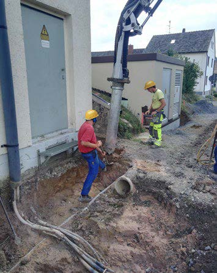

6 Durchführung der Bauarbeiten
Bauarbeiten müssen von fachlich geeigneten Vorgesetzten geleitet und von weisungsbefugten Personen beaufsichtigt werden (siehe § 4 Unfallverhütungsvorschrift "Bauarbeiten" [DGUV Vorschriften 38 und 39]).
Erdverlegte elektrische Leitungen sind als unter Spannung stehend zu betrachten, solange der Betreiber nicht ausdrücklich (schriftlich) die Spannungsfreiheit bestätigt hat.
Das Hantieren, z. B. Bewegen, Aufnehmen, Hochhängen, mit nicht freigeschalteten Leitungen ist eine elektrotechnische Arbeit, die nur von Personen durchgeführt werden darf, die für solche Tätigkeiten qualifiziert und unterwiesen sind, die Weisung des Betreibers kennen und die festgelegten Schutz- und Hilfsmittel (geeignetes Werkzeug) benutzen.
|
Andere Leitungen, insbesondere Gas- und Fernwärmeleitungen, sind solange als gefährdend zu betrachten, bis der Betreiber ausdrücklich (schriftlich) die von ihm durchzuführenden Schutz- und Sicherungsmaßnahmen bestätigt hat.
Die Schutzabstände zu den einzelnen Leitungen sind nach Maßgabe der Leitungsbetreiber einzuhalten. Maschineller Aushub ist bis maximal 30 cm oberhalb oder seitlich der Leitung zulässig. Schutz- und Warnelemente bieten keinen Schutz gegen mechanische Beschädigung.
Vorhandene Schachtabdeckungen und Straßenkappen sind stets freizuhalten.
Besondere Sicherungsmaßnahmen sind in Abstimmung mit den Betreibern z. B. bei Richtungsänderungen, Abzweigen und Leitungsringen festzulegen.
6.1 Freilegen von Leitungen
Handschachtung zum Freilegen von Leitungen mit Handwerkzeugen ist möglichst mit stumpfen, waagerecht zu führenden Werkzeugen, z. B. Schaufeln, durchzuführen.

Abb. 4 Saugrohr eines Saugbaggers im Einsatz
Im innerstädtischen Bereich sind Saugbagger besonders gut für Erdarbeiten in der Nähe erdverlegter Leitungen geeignet (siehe Anhang 5).
6.2 Sichern von Leitungen
- Freigelegte Leitungen dürfen nur nach Vorgabe oder unter Mitwirkung des Betreibers gesichert werden.
- Lageänderungen dürfen nur in Abstimmung mit dem Betreiber vorgenommen werden.
- Leitungen sind vor mechanischen Belastungen und Beschädigungen zu schützen. Punktuelle Aufhängungen sind wegen möglicher Beschädigungen, z. B. durch Knicke oder kleine Biegeradien, unzulässig. Der Einbau von geeigneten Unterstützungen ist mit dem Betreiber abzustimmen.
- Sicherungsarbeiten an Leitungen sind so durchzuführen, dass deren Dichtheit und Festigkeit nicht beeinträchtigt werden.
- Bei Leitungen aus PVC oder Metallguss, die nahe zur Baugruben- oder Grabenwand liegen, ist mit dem Betreiber an Hand der Gefährdungsbeurteilung zu prüfen, ob zusätzliche Schutzmaßnahmen erforderlich sind, wie z. B.:
- Leitungen freilegen, um sie während der Bauarbeiten beobachten zu können.
- Leitungen, die unter Druck betrieben werden, nach Möglichkeit im Baubereich mit Schiebern absperren oder drucklos machen.
Auf jeden Fall ist vor Ort zu prüfen, ob Absperrvorrichtungen oberhalb und unterhalb der Baustelle vorhanden und funktionsfähig sind.
- Baugrube oder Graben so sichern, dass plötzlich aus berstenden Leitungen austretendes Medium, insbesondere Wasser, die Beschäftigten im Arbeitsbereich nicht gefährden kann. Dazu zählt auch die Sicherstellung geeigneter Fluchtwege.
6.3 Unvermutetes Antreffen von Leitungen
Bei unvermutetem Antreffen von Leitungen sind die Arbeiten sofort einzustellen. Die Stelle ist zu sichern und zu kennzeichnen (Gefahrenbereich absperren, Zugang verhindern).
Die infrage kommenden Leitungsbetreiber und der Auftraggeber sind zu verständigen und mit ihnen das weitere Vorgehen abzustimmen.
6.4 Grabenlose Bauverfahren
(siehe auch gleichnamige DGUV Information 201-020 und DWA-Arbeitsblatt A 125/DVGW-Merkblatt GW 304 "Rohrvortrieb")
- Die Lage der vorhandenen Leitungen und die Bodenverhältnisse im Bereich der Vortriebsstrecke (Bodenart, Lagerungsdichte, Höhe des Grundwasserspiegels, Auffüllungen mit Fremdmaterial) müssen exakt ermittelt werden, um Abweichungen von der Sollachse zu vermeiden.
- Die Startgrube sollte dort angelegt werden, wo sich die meisten Leitungen (Kabelpakete, Schächte, Kreuzungspunkte) befinden.
- Bei Bodenverdrängungsverfahren ist der Mindestabstand zu vorhandenen Leitungen mit den Leitungsbetreibern festzulegen, um auch indirekte Leitungsbeschädigungen zu vermeiden.
- Bei ungesteuerten Horizontalbohrungen (ohne laufende Ortung des Vortriebskopfes) besteht die Gefahr unkontrollierter Abweichungen von der vorgesehenen Bohrachse. Daher ist dieses Bohrverfahren nur zulässig, wenn im Arbeitsumfeld keine in Betrieb befindlichen erdverlegten Leitungen vorhanden sind.